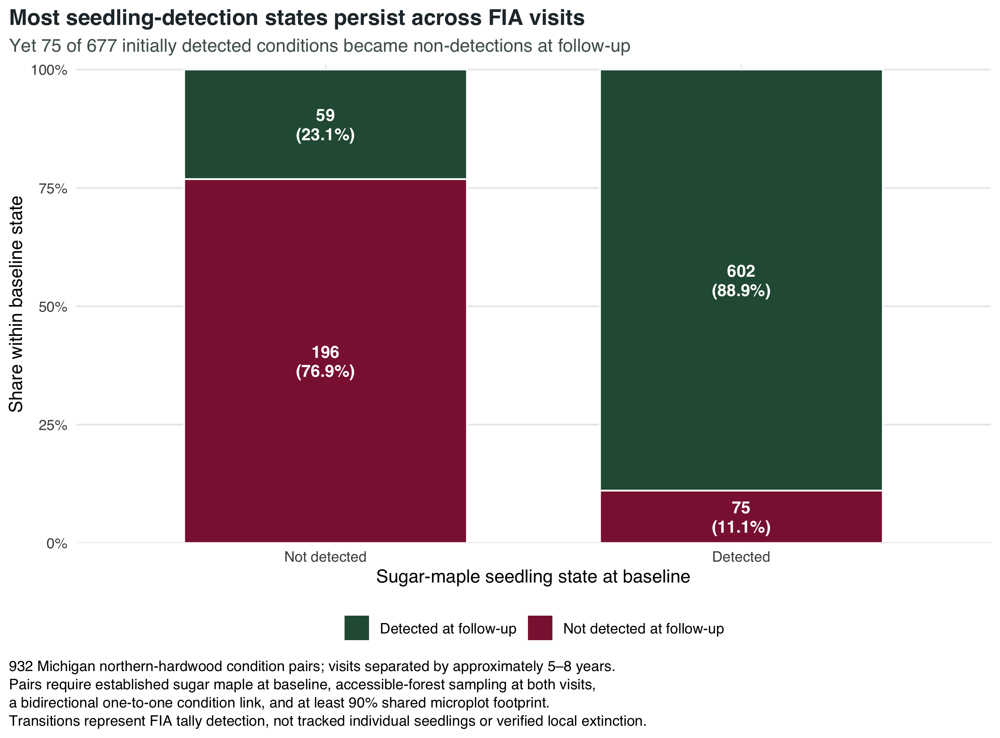
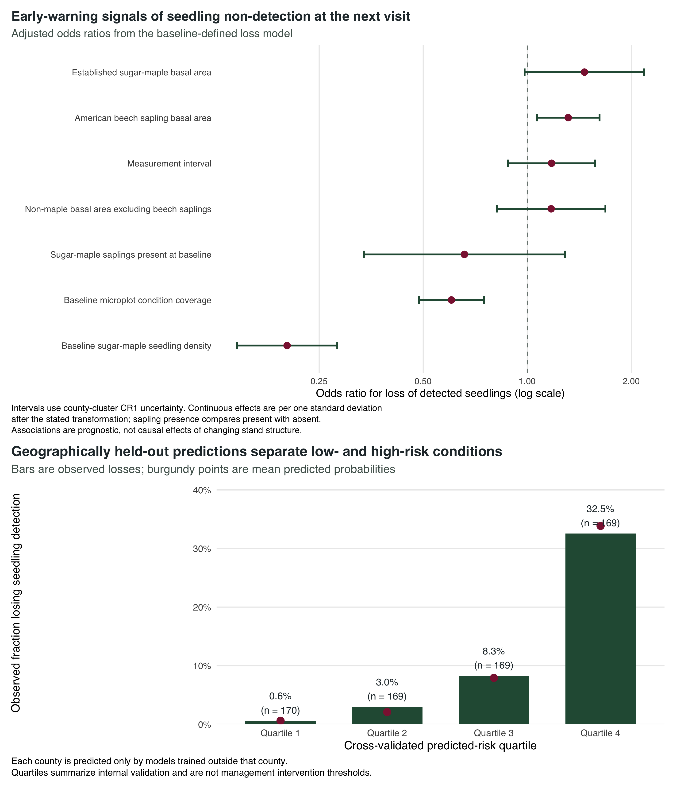

| Step | Pair rows | Baseline conditions | Physical plots |
|---|---|---|---|
| Positive microplot condition links in the current evaluation | 8,454 | 8,003 | 6,209 |
| Baseline sampled northern-hardwood conditions | 1,401 | 1,325 | 1,264 |
| Baseline conditions with established sugar maple | 1,093 | 1,034 | 1,006 |
| Bidirectional one-to-one condition mapping | 941 | 941 | 919 |
| Comparable accessible-forest follow-up | 932 | 932 | 913 |
| At least 90% shared microplot footprint and positive interval | 932 | 932 | 913 |
Michigan · repeated FIA conditions · approximately 5–8 years apart
Which detections disappear—and can new detections be anticipated?
This exploratory pilot follows mapped forest conditions through time. It describes repeated seedling tallies, not recruitment success. The recruitment study now implements the revised primary direction with a new endpoint, linked-stem fates, and newly fitted models. This page preserves the supporting detection pilot.

The outcome is a repeated tally state, not a claim that individual seedlings were tracked.
932
strict repeated-condition pairs
75 / 677
baseline detections lost at follow-up
0.856
county-held-out ROC AUC
+0.011
AUC added over abundance and observation
Bottom line
11.1% of conditions with sugar-maple seedlings detected at baseline had no seedlings tallied at the next visit. Starting abundance, sampling coverage, and interval already account for 94.2% of the full model’s Brier improvement over prevalence. Added stand variables provide a small, uncertain improvement. The earlier field-triage claim is withdrawn: these results concern detection, not regeneration failure, and do not establish operational value. Beech remains an exploratory association, not the project’s organizing explanation.
Abstract
This exploratory study links 932 repeated Michigan Forest Inventory and Analysis (FIA) forest conditions with established sugar maple at baseline, accessible sampling at both visits, one-to-one mapping, and comparable microplot footprints. Visits were separated by 5.4–8.1 years. Of 677 baseline seedling detections, 75 became non-detections. County-held-out validation of a seven-slope logistic model gave Brier 0.08151 and AUC 0.856, compared with 0.08253 and 0.845 for starting abundance, coverage, and interval alone. The added predictive improvement is small and uncertain under a paired county bootstrap conditional on existing fitted folds. Sixty of 75 losses began with no more than five tallied seedlings. Among 255 baseline non-detections, 59 became detections; a four-slope appearance model had weak held-out discrimination (AUC 0.566). Neither endpoint measures individual survival or sapling recruitment. The pilot is retained as measurement evidence; the revised primary goal evaluates recruitment and linked sapling fates rather than promoting a detection-risk tool.
1 Why the research direction changed
The first project release asked which size classes occurred together at one visit. That work produced an important measurement result: combining 1–4.9-inch saplings with trees at least 5 inches DBH made “maple abundance” look more informative than established-tree abundance alone. Once FIA size classes were separated, sapling presence—not additional established-maple basal area—carried most of the same-visit association.
Repeated conditions improved time ordering, but the detection pilot still leaves the central ecological question unanswered: do observed seedlings lead to advancing regeneration? Presence can persist without advancement, while disappearance from a size class can include growth into a larger class. The current direction review therefore changes the primary endpoint, not merely the model’s complexity.
Michigan studies report abundant small seedlings alongside limited larger regeneration (Henry et al. 2021), and show that small-diameter sugar maples can be old, suppressed stems (Henry and Walters 2023). Regional FIA studies distinguish favorable small-seedling composition from low sugar-maple sapling abundance (Harris et al. 2026b). Browse relationships vary by size class (Harris et al. 2025). The Canadian beech association is a candidate hypothesis, with geography, size-class definitions, and relative-abundance measures limiting transfer (Gauthier 2025).
Crucially, prior research already predicts FIA sapling recruitment and compares ordinary seedling counts with six height classes (Harris et al. 2022); advance-regeneration prediction after disturbance is also established (Harris et al. 2026a). A useful contribution here must be a Michigan evaluation of indicator performance and limitations, not a claim that longitudinal FIA forecasting is novel.
2 Questions addressed by this pilot
The pilot’s primary question was:
Among Michigan northern-hardwood conditions with established sugar maple and seedlings detected at baseline, which baseline characteristics predict no seedling detection at the next FIA measurement?
Four secondary questions keep the interpretation honest:
- How often do the four detection transitions—persistent non-detection, appearance, loss, and persistence—occur?
- Does American beech sapling basal area add information beyond starting seedling density and general stand structure?
- Does the risk signal survive when whole counties are withheld during model fitting?
- Among baseline non-detections, can a lean model forecast later detection appearance?
The estimand is a repeated observation probability. It is not individual seedling survival, recruitment into the sapling class, or a causal effect of competition or management.
3 Data and cohort
3.1 FIA source and analytical grain
The analysis uses the Michigan SQLite release from the U.S. Forest Service FIA DataMart (U.S. Forest Service 2026) and pins current evaluation “MICHIGAN 2025: 2019-2025: CURRENT AREA, CURRENT VOLUME” (EVALID 262501; inventory window 2019–2025). Sugar maple resolves from REF_SPECIES to Acer saccharum (SPCD 318), American beech to Fagus grandifolia (SPCD 531), and the baseline northern-hardwood cohort to active forest-type group 800 codes (Burrill et al. 2025).
The unit is one linked pair of FIA plot conditions. Control numbers are relational identifiers, not coordinates. Exact FIA plot locations are neither used nor inferred; county identifiers are retained only for grouped validation.
3.2 Following the same microplot footprint
SUBP_COND_CHNG_MTRX supplies the authoritative condition linkage. Because seedlings are sampled on microplots, the extraction uses SUBPTYP = 2. Rows are first aggregated to each baseline–follow-up condition pair:
\[ Overlap_{bc} = \frac{1}{4}\sum_{s=1}^{4} SUBPTYP\_PROP\_CHNG_{bcs}. \]
Pair degrees are computed before ecological filters. The primary cohort retains only bidirectional one-to-one links, then requires the overlap divided by both baseline and follow-up MICRPROP_UNADJ to be at least 0.90. Small conditions are therefore not rejected merely because their absolute area share is below 0.90. Among strict links, the minimum observed relative overlap was 0.991.
Baseline eligibility requires a sampled accessible-forest condition in forest-type group 800, positive microplot coverage, and at least one live sugar-maple TREE record with DBH ≥5 inches. Follow-up must be sampled accessible forest with positive microplot coverage. It is not required to remain in group 800 because follow-up classification is post-baseline; 98.2% nevertheless remained in that group.
4 Methods
4.1 Repeated outcome
A sampled condition is detected when its aggregated sugar-maple SEEDLING density is positive. A missing sugar-maple row becomes zero only when MICRPROP_UNADJ > 0 demonstrates sampling opportunity. The four transitions are defined independently from baseline and follow-up tallies. The primary binary outcome equals one for baseline detected → follow-up not detected and zero for detected → detected.
“Loss” is shorthand for loss of detection. FIA does not tag individual seedlings, and a zero tally does not demonstrate ecological absence across the forest condition.
4.2 Baseline predictors
All ecological predictors are measured at baseline; interval length is an exposure-time design covariate:
- baseline sugar-maple seedling density, representing starting abundance;
- baseline sugar-maple sapling presence (DBH 1–4.9 inches);
- established sugar-maple basal area (DBH ≥5 inches);
- American beech sapling basal area (DBH 1–4.9 inches);
- non-maple basal area excluding beech saplings, while retaining established beech as background stand structure;
- baseline microplot condition coverage, representing detection opportunity; and
- elapsed years between measurements.
Each basal-area contribution uses the FIA frame on which the tree was sampled. Microplot trees divide by MICRPROP_UNADJ, subplot trees by SUBPPROP_UNADJ, and applicable macroplot trees by MACRPROP_UNADJ. In the current-evaluation cross-sectional audit, the same implementation reproduces FIA COND.BALIVE with mean absolute error 0.000132 ft²/acre across 1,457 conditions.
4.3 Model and validation
The primary prognostic model is:
\[ \begin{aligned} \operatorname{logit}\{P(Loss_c=1)\} =\;& \beta_0 + \beta_1z\{\log(1 + SeedlingTPA_c)\} + \beta_2 SaplingPresent_c \\ &+ \beta_3z\{\log(1 + BA^{est}_{maple,c})\} + \beta_4z\{\log(1 + BA^{sap}_{beech,c})\} \\ &+ \beta_5z\{\log(1 + BA_{other,c})\} + \beta_6z(Coverage_c) + \beta_7z(Interval_c). \end{aligned} \]
Continuous predictors are standardized within the complete model cohort; every validation fold relearns transformations using training counties only. The 75 losses provide 10.7 events per slope. This accounting ratio does not guarantee adequate sample size or stable prediction; outcome frequency, clustering, complexity, and expected performance also matter (Riley et al. 2020). County-cluster CR1 intervals address within-county dependence. A county random-intercept model is retained as sensitivity evidence.
Five deterministic folds hold out entire counties. Reported internal-validation measures are pooled Brier score, ROC AUC, calibration intercept and slope, and Brier skill relative to an intercept-only prevalence benchmark. No county effect or scaling information is transferred to a held-out county.
Nested models separate what each layer contributes: a prevalence benchmark; starting seedling density, coverage, and interval; additional maple stage and stand structure; and finally the American beech sapling hypothesis.
The secondary appearance model is conditioned on no baseline seedling detection. Its four slopes are sugar-maple sapling presence, standardized log1p established-maple basal area, standardized baseline microplot coverage, and standardized interval length. This lean specification represents maple stage continuity, observation opportunity, and exposure time without importing the beech loss hypothesis. The 59 appearances provide 14.75 events per slope overall; the leanest validation training set retains 42 appearances, or 10.5 per slope. It uses the same county-held-out and training-only-scaling protocol as the loss model.
5 Results
5.1 Four transition states
Among 677 baseline detections, 75 became non-detections and 602 persisted. Among 255 baseline non-detections, 59 (23.1%) became detections. These asymmetric denominators are why loss and appearance are described separately rather than forced into a parameter-heavy multinomial model.
| Transition | Baseline state | Conditions | Fraction within baseline state |
|---|---|---|---|
| Persistent non-detection | Not detected | 196 | 76.9% |
| Appearance | Not detected | 59 | 23.1% |
| Loss | Detected | 75 | 11.1% |
| Persistence | Detected | 602 | 88.9% |
5.2 Detection-loss associations

The clearest detection-risk warning was a thin starting cohort. A one-SD increase in transformed baseline seedling density corresponded to OR 0.20 (95% CI 0.14–0.28) for later non-detection. Because the model conditions on a positive baseline tally, this strong association can include regression to the mean and repeated-count variability as well as biological change. Coverage also mattered (OR 0.60, 95% CI 0.49–0.75), consistent with observation opportunity contributing to apparent risk; the association may also reflect ecological differences among condition footprints.
American beech sapling basal area had OR 1.31 (95% CI 1.07–1.62). Adding it to the stage-structure model reduced AIC by 4.09 and improved the nested likelihood-ratio comparison (p = 0.014). In county-held-out validation it modestly improved both Brier score and AUC relative to the stage-structure model. This consistency makes beech a credible follow-up hypothesis, but not a demonstrated mechanism.
Sugar-maple sapling presence was associated with directionally lower loss odds (OR 0.66, 95% CI 0.34–1.29) but imprecisely. Established-maple basal area also had an imprecise association (OR 1.46, 95% CI 0.98–2.18). These intervals do not establish protective effects or their absence.
| Predictor | Odds ratio | 95% CI | Robust p-value |
|---|---|---|---|
| Baseline sugar-maple seedling density | 0.20 | 0.14–0.28 | <0.001 |
| Sugar-maple saplings present at baseline | 0.66 | 0.34–1.29 | 0.221 |
| Established sugar-maple basal area | 1.46 | 0.98–2.18 | 0.061 |
| American beech sapling basal area | 1.31 | 1.07–1.62 | 0.010 |
| Non-maple basal area excluding beech saplings | 1.17 | 0.82–1.68 | 0.387 |
| Baseline microplot condition coverage | 0.60 | 0.49–0.75 | <0.001 |
| Measurement interval | 1.18 | 0.88–1.57 | 0.273 |
5.3 Geographic validation and risk separation
The full model achieved held-out Brier score 0.082, AUC 0.856, calibration intercept -0.003, and calibration slope 0.882. Its Brier skill relative to fold-specific prevalence was 17.7%.
The highest predicted-risk quartile contained 55 of all 75 losses and had an observed loss fraction of 32.5%. The lowest quartile had 1 loss (0.6%). Predicted and observed fractions were close in all four quartiles, but these are internal risk strata—not universal intervention thresholds.
| Model | Brier | AUC | Calibration slope | Brier skill |
|---|---|---|---|---|
| Beech hypothesis | 0.082 | 0.856 | 0.882 | 17.7% |
| Prevalence benchmark | 0.099 | — | — | 0.0% |
| Stage structure | 0.083 | 0.845 | 0.868 | 16.0% |
| Starting abundance and observation | 0.083 | 0.845 | 0.915 | 16.7% |
The county random-intercept sensitivity converged without singularity and estimated county variance 0.178. Its AIC was slightly higher than the fixed-effect model. The small difference does not decisively resolve the grouping specification.
5.4 Reassessment: what does the full model add?
A high AUC is not sufficient evidence of useful ecological prediction. The abundance-and-observation benchmark already achieves AUC 0.845. Relative to that benchmark, the full model’s Brier difference is -0.00102 (95% conditional county-bootstrap interval -0.00585 to 0.00475; negative favors the full model). The AUC difference is 0.011 (interval -0.013 to 0.031). These intervals resample counties in existing held-out predictions without refitting; they omit model-development and fold-selection uncertainty. They do not prove equivalence or rule out useful improvement.
| Model | Brier | AUC | Losses among top 169 |
|---|---|---|---|
| Starting density only | 0.08536 | 0.830 | 51 |
| Starting abundance and observation | 0.08253 | 0.845 | 53 |
| Beech hypothesis | 0.08151 | 0.856 | 55 |
| Maple structure and total nonmaple | 0.08322 | 0.846 | 53 |
| Maple structure and total nonmaple plus beech | 0.08151 | 0.856 | 55 |
At identical capacity, the full model captures 55 losses versus 53 for the strong benchmark. A fair comparator using total non-maple basal area, then adding beech, gives almost the same full-model performance; fixing that comparison does not erase the beech association. Its incremental uncertainty still warrants caution.
Direct source-count reconciliation found 34 losses among 82 conditions starting with one tallied seedling, 26 among 129 starting with two to five, 12 among 183 with six to twenty, and three among 283 with more than twenty. Thus 60 of 75 losses began with five or fewer tallied seedlings. This pattern persists on nearly fully covered conditions. It supports studying sparse-count instability, without establishing how much is biological versus observational.
5.5 Appearance occurred, but was not forecast reliably
Among the 255 conditions without a baseline detection, 59 (23.1%) had a positive tally at follow-up. This is detection appearance, not proof of new recruitment or establishment.
The full secondary model achieved held-out Brier score 0.179 against 0.180 for the fold-specific prevalence benchmark, AUC 0.566, and calibration slope 0.460. Its Brier skill was only 0.5%. Risk ranking was not monotonic: observed appearance was 32.8% in quartile 3 and 23.8% in quartile 4.
Sugar-maple sapling presence had OR 1.77 (95% county-cluster interval 0.87–3.59), but its interval crossed one. No appearance-model interval excluded one. The tested specification performed weakly in this cohort and partition. That does not establish a predictive limit of all FIA variables or methods, or imply that appearance is ecologically unstructured.
| Predictor | Odds ratio | 95% CI | Robust p-value |
|---|---|---|---|
| Sugar-maple saplings present at baseline | 1.77 | 0.87–3.59 | 0.112 |
| Established sugar-maple basal area | 0.98 | 0.71–1.34 | 0.902 |
| Baseline microplot condition coverage | 1.27 | 0.86–1.89 | 0.234 |
| Measurement interval | 1.14 | 0.85–1.53 | 0.393 |
6 Discussion
What the evidence supports
- Seedling detection is usually persistent, but roughly one in nine baseline detections became a zero tally at the next visit.
- Low starting seedling tallies are strongly associated with later zero tallies.
- Detection opportunity must remain explicit when interpreting these transitions.
- The stand variables add little prediction beyond abundance and observation; beech remains an exploratory association.
- County-held-out detection ranking is not evidence of recruitment prediction or management value.
- Detection appearance occurred in nearly one quarter of baseline non-detections, but the tested compact model did not forecast it reliably.
What it does not establish
- That the original seedlings died or that sugar maple became locally extinct.
- That American beech caused the change rather than marking browsing, soils, disturbance history, or other site conditions.
- Which management treatment would prevent loss.
- Statewide or county prevalence under the formal FIA survey design.
- Performance in another state, inventory cycle, or independent field study.
- That the appearance model can identify sites likely to gain seedlings.
The earlier recommendation to use this model for field triage was premature. A triage study would need a regeneration-relevant outcome, a stated survey objective and capacity, and evidence of improvement over a simple abundance rule. The present pilot supplies none of those operational validations. Its useful contribution is to expose the distinction between repeat detection and advancing regeneration.
The beech signal could reflect competitive pressure, deer selectivity, site fertility, sprouting history, or unmeasured management. It is one hypothesis among several, not a prescription or sufficient reason to organize the next study around beech.
7 Limitations
- Detection, not tracked survival. FIA seedlings are tally records, not tagged individuals. A transition to zero can reflect mortality, growth out of the size class, spatial turnover, phenology, or imperfect detection.
- Conditioning and repeated counts. The loss model begins with positive baseline tallies and uses their density as its strongest predictor. Low positive counts are mechanically more likely to become zero under repeated sampling, so this coefficient can reflect regression to the mean or count variability even when latent abundance is stable.
- Observation footprint. Although all primary pairs share at least 90% of both condition footprints—and in practice at least 99.1%—smaller microplot condition shares still provide fewer opportunities to encounter seedlings.
- Strict-pair selection. Split, merged, inaccessible, and nonforest follow-ups are excluded from the primary biological outcome. Nine otherwise eligible strict baseline conditions lacked a comparable follow-up.
- Two observations. One interval identifies a transition but not a trajectory, lag structure, or recruitment rate.
- Prognostic coefficients. Baseline associations do not identify causal effects. Inter-visit treatment was deliberately excluded from the primary model because timing and confounding by indication are inadequate for causal inference.
- Unmeasured mechanisms. Browse, detailed seedling height, soils, invasive plants, and understory vegetation are available only for small nested FIA subsets.
- Internal validation. County-held-out validation tests geographic transport within Michigan, not external generalization. The reassessment reuses these folds; its bootstrap is conditional on fitted predictions. This is exploratory reanalysis, not untouched confirmation.
- Weak gain model. The secondary appearance model has low discrimination and shrinkage-prone calibration. Appearance may depend on unmeasured seed production, microsites, browse, disturbance timing, or count variation; it is not a usable site-level gain forecast.
- Survey estimand.
TPA_UNADJand condition proportions support within-plot density construction; they are not statewide survey weights. Formal prevalence requires FIA population-estimation procedures (Bechtold and Patterson 2005).
8 Reproducibility
The pipeline records 85 hashed source artifacts, a pinned evaluation, condition-link audits, frame-specific basal-area validation, cohort flow, scaling constants, model support, county-cluster inference, nested model comparisons, fold assignments, held-out predictions for both conditional outcomes, and tests. The mapping audit found zero broken condition references and zero disagreements between matrix predecessor links and PLOT.PREV_PLT_CN.
From a fresh clone:
make setup
make acquire
make allThe longitudinal target runs scripts/09_build_longitudinal_dataset.R and scripts/10_longitudinal_models.R. The direction-audit target runs the benchmark and recruitment-feasibility audits in scripts 11 and 12. Raw, interim, and record-level processed FIA data remain excluded from version control; aggregate evidence and figures contain no plot coordinates.
9 Next research step
The recruitment study now tests whether ordinary seedling and sapling observations anticipate new sapling recruitment. Its audited cohort contains 922 intervals, 169 new live saplings in 100 conditions, and a companion linked-stem fate analysis. The original 171-stem feasibility screen and 2,308 historical candidate intervals are retained in the direction audit; they are not the final recruitment model population. See the current goals for what is implemented and what remains unresolved.
First validate ingrowth codes, sampling-frame continuity, species corrections, and sampled zero-tree visits. Then compare a small sequence of observation, abundance, and stage-structure models using grouped validation and a retrospective temporal check. Report surviving growth, death, and identity changes separately. RI height classes are a conditional extension if repeated Michigan support proves adequate; any browse predictor needs a circularity check. Negative or imprecise incremental results are valid outcomes of this study.
References
Bechtold, William A., and Paul L. Patterson, eds. 2005. The Enhanced Forest Inventory and Analysis Program: National Sampling Design and Estimation Procedures. GTR-SRS-80. U.S. Department of Agriculture, Forest Service. https://doi.org/10.2737/SRS-GTR-80.
Burrill, Elizabeth A. et al. 2025. The Forest Inventory and Analysis Database: Database Description and User Guide for Phase 2, Version 9.4. U.S. Department of Agriculture, Forest Service. https://research.fs.usda.gov/understory/forest-inventory-and-analysis-database-user-guide-nfi.
Gauthier, Martin-Michel. 2025. “Six Decades of Forest Inventory Data Highlight Decline of Sugar Maple (Acer saccharum) Sapling Abundance in Eastern Canada.” Ecology and Evolution 15 (5): e71386. https://doi.org/10.1002/ece3.71386.
Harris, Lucas B., Melissa A. Pastore, and Anthony W. D’Amato. 2025. “Effects of Browsing by White-Tailed Deer on Tree Regeneration Vary by Ontogeny and Palatability in Forests of the Northeastern USA.” Forest Ecology and Management 593: 122906. https://doi.org/10.1016/j.foreco.2025.122906.
Harris, Lucas B., Melissa A. Pastore, and Anthony W. D’Amato. 2026a. “Tree Regeneration Following Natural Disturbance and Harvesting Indicates Challenges Maintaining Forest Composition and Tree Species Diversity in Northern USA Forests.” Journal of Applied Ecology 63 (8): e70522. https://doi.org/10.1111/1365-2664.70522.
Harris, Lucas B., Melissa A. Pastore, and Anthony W. D’Amato. 2026b. “Tree Regeneration Trends in Forests of the Northeastern USA and Their Implications for Resilience and Restoration.” Ecological Applications 36 (5): e70288. https://doi.org/10.1002/eap.70288.
Harris, Lucas B., Christopher W. Woodall, and Anthony W. D’Amato. 2022. “Increasing the Utility of Tree Regeneration Inventories: Linking Seedling Abundance to Sapling Recruitment.” Ecological Indicators 145: 109654. https://doi.org/10.1016/j.ecolind.2022.109654.
Henry, Catherine R., and Michael B. Walters. 2023. “Sugar Maple (Acer saccharum) Age Structure Reveals Limited Establishment and Development of Age Cohorts in Response to Selection Management in Northern Hardwood Forests.” Forest Ecology and Management 546: 121356. https://doi.org/10.1016/j.foreco.2023.121356.
Henry, Catherine R., Michael B. Walters, Andrew O. Finley, Gary J. Roloff, and Evan J. Farinosi. 2021. “Complex Drivers of Sugar Maple (Acer saccharum) Regeneration Reveal Challenges to Long-Term Sustainability of Managed Northern Hardwood Forests.” Forest Ecology and Management 479: 118541. https://doi.org/10.1016/j.foreco.2020.118541.
Riley, Richard D., Joie Ensor, Kym I. E. Snell, et al. 2020. “Calculating the Sample Size Required for Developing a Clinical Prediction Model.” BMJ 368: m441. https://doi.org/10.1136/bmj.m441.
U.S. Forest Service. 2026. FIA DataMart. https://research.fs.usda.gov/products/dataandtools/fia-datamart.